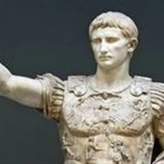

gio 29 ott
L'attualità del latino, confronto tra cultura antica e contempranea
Il rapporto tra la cultura antica e quella contemporanea, tra le radici del sapere occidentale e la fruizione che se ne fa al giorno d’oggi. Sono i temi al centro del seminario “Due libri: il latino per il mondo di oggi. Dialoghi sulla ricezione classica” che si terrà…
 Indicazioni
Indicazioni
- Costi e prenotazioni
- Costo non indicato · Prenotazione non indicata
- Programma
- Programma da verificare. Apri la fonte ufficiale per orari e possibili aggiornamenti.
- In caso di maltempo
- Nessuna indicazione specifica pubblicata.
- Note
- Acquisito automaticamente dalla fonte.
L’EVENTO
Descrizione completa
Il rapporto tra la cultura antica e quella contemporanea, tra le radici del sapere occidentale e la fruizione che se ne fa al giorno d’oggi. Sono i temi al centro del seminario “ Due libri: il latino per il mondo di oggi. Dialoghi sulla ricezione classica ” che si terrà all’ Università di Udine giovedì 29 ottobre . L’incontro, organizzato dal Dipartimento di Lingue e letterature, comunicazione, formazione e società, inizierà alle 12, nell’aula 1A di Palazzo Antonini a Udine (via Petracco, 8). Saranno anche presentati due volumi che esplorano l’attualità del mondo classico. Il primo è “ Virgilio è urgente. Lettori moderni dei classici ” (Interlinea 2025). Raccoglie gli articoli di Roberto Andreotti pubblicati dal 2009 al 2024 su "Alias Domenica", supplemento culturale del quotidiano "Il manifesto". È un libro sulla letteratura classica che nasce da una scommessa editoriale. Cioè impaginare le recensioni su autori greci e latini con quelle dei classici moderni e, soprattutto, con quelle dei loro colleghi attuali, promuovendo la fruizione tra antico e contemporaneo. Il secondo volume, curato da Giulia Degano, giovane laureata friulana, è “ Grammatica con inizio dalla morfologia ” (Marsilio) di John Milton. Parte da un piccolo, raffinato, manuale di latino pubblicato nel 1669. Per la prima volta tradotto in italiano, è corredato di un commento che identifica le fonti grammaticali e le innumerevoli citazioni di autori classici, spesso dense di spunti poetici. Attraverso l’apparente aridità della descrizione grammaticale, traspare così la personalità di Milton poeta, il suo stile, la sua fiducia nel valore letterario e civile della cultura classica. Una grammatica tra le più sintetiche di tutti i tempi permette di esplorare il rapporto dell’autore con i modelli letterari dell’antichità. Dei due libri discuteranno: Maria Luisa Delvigo, docente di Lingua e letteratura latina del Dipartimento di Studi umanistici e del patrimonio culturale dell’ateneo friulano, e Carlo Franco, storico veneziano. Modererà Renato Oniga, docente di Letteratura latina nella modernità del Dipartimento di Lingue e letterature, comunicazione, formazione e società dell’Università di Udine.
IL PROGRAMMA
Programma e orari
Appuntamenti raccolti dalle fonti elencate. Dove manca un orario, non è ancora disponibile in questa scheda.
Programma pubblicato
- Dal 2026-10-29 al 2026-10-29
INFORMAZIONI UTILI
Prima di partire
- Controllare la fonte prima di partire.
ORGANIZZAZIONE